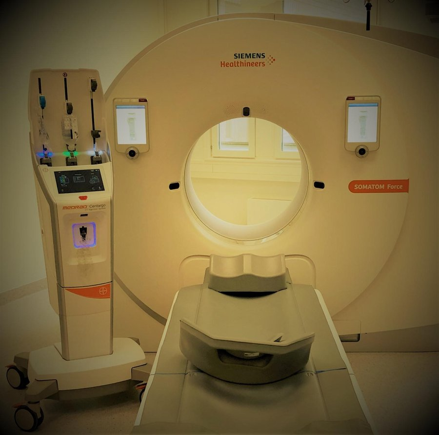

المفراس (التصوير المقطعي)
أنبوب أشعة وdetectors (الكواشف) مقابله داخل حلقة gantry، يدوران حول المريض.
الحاسوب يجمع القياسات من كل الزوايا ويبني صوراً على شكل شرائح (slices).
كل نقطة تأخذ رقماً حسب التوهين: Hounsfield unit (HU).
الماء 0، الهواء −1000، الدهون حوالي −100، العظم حوالي +1000 (القشري أكثر).
